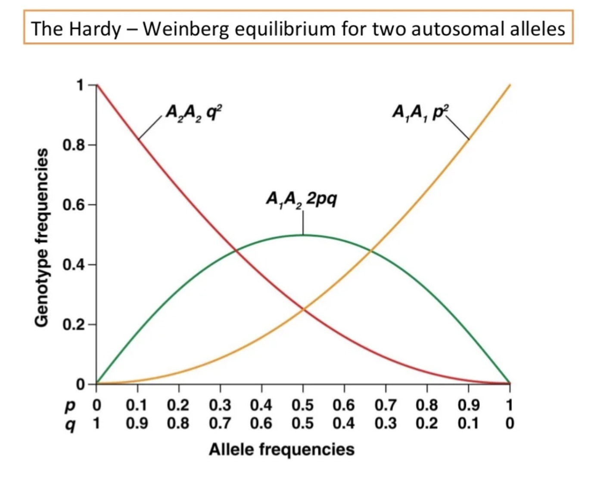

Introduction
群体遗传学（Population Genetics）是研究在群体水平上基因频率的变化及其影响因素的学科。它结合了遗传学、进化生物学和统计学的方法来分析基因在群体中的分布和变化。
群体（Population）指的是一组同一物种的个体，它们生活在同一地理区域内，并能够相互交配和繁殖。这个群体的个体共享一个共同的基因库（gene pool），即所有个体的基因及其等位基因的集合。
群体有几个特征：
-
物种一致性：群体中的所有个体属于同一个物种，意味着它们在生物学上能够相互交配并产生具有生殖能力的后代。
-
地理相对性：群体通常指在特定地理区域内的个体集合，虽然不同群体之间可能会有基因交流（如迁移），但通常被认为是相对隔离的。
-
基因库：群体内的个体共享一个基因库，这意味着在群体内部进行的所有交配，都会影响该群体的基因频率和遗传结构。
-
交配能力：群体中的个体能够进行随机或非随机的交配，产生后代，从而使得群体的基因频率在世代之间发生变化。
在群体遗传学研究中，群体的概念是基础，因为研究的主要目标是理解在不同条件下（如自然选择、基因漂变、基因流动、突变等），一个群体的基因频率和基因型频率是如何变化的。
群体遗传学的研究帮助科学家理解进化过程、物种形成、群体间的遗传差异及其对环境变化的适应能力等。
Concepts
以下是群体遗传学中一些相关概念的简要介绍：
-
Locus（基因座）：指基因或DNA片段在染色体上的特定位置。基因座可以是一个特定基因的位置，也可以是任意DNA序列的位置。
-
Variation/Mutation（变异/突变）：指基因或DNA序列中发生的变化。突变是引起变异的过程，是基因组中遗传信息的永久性改变。
-
Indel（插入/缺失）：指DNA序列中发生的短片段插入或缺失变异。Indel可导致基因功能的变化，尤其是在编码区发生时。
-
SNP（单核苷酸多态性）：指基因组中单个核苷酸的位置上的变异，是一种常见的遗传变异形式。
-
Alleles（等位基因）：指位于同一基因座的不同版本或变体。一个基因座可以有多个等位基因。
-
SV（结构变异，Structural Variation）：指基因组中涉及大片段DNA的变异，通常定义为长度大于50个碱基对的变异。SV包括多种类型的变异，如：
- 缺失（Deletion）：基因组中一段DNA片段的丢失。
- 重复（Duplication）：一段DNA片段的重复。
- 倒位（Inversion）：一段DNA片段在基因组中的方向发生了反转。
- 易位（Translocation）：一段DNA片段从一个位置移动到另一个位置。
- 插入（Insertion）：一段新的DNA片段插入到基因组中。
-
CNV（拷贝数变异，Copy Number Variation）：属于结构变异的一种，指基因组中某段DNA序列的拷贝数发生了变化，导致这段序列的拷贝数多于或少于通常的两个拷贝。CNV可以包括：
- 基因扩增（Gene Amplification）：某段DNA的拷贝数增加。
- 基因缺失（Gene Deletion）：某段DNA的拷贝数减少。
-
Haplotypes（单倍型）：指一组位于同一染色体上的紧密连锁的基因或遗传标记的组合，通常作为一个整体进行遗传。
-
Selection（选择）：自然选择的过程，通过优先传递适应环境的基因，影响群体中基因频率的变化。
- Positive selection（正选择）：有利于有益突变的传播和保持。
- Negative selection（负选择）：排除有害突变，维持群体基因组的稳定性。
-
Genetic drift（基因漂变）：群体中的等位基因频率由于随机抽样效应而发生的变化，尤其在小群体中更为显著。
-
核苷酸多样性 (π) ：测量群体中任意两个个体的基因序列之间平均差异的程度。反映了群体的遗传多样性。
-
非同义突变率与同义突变率的比值 (dN/dS) ： 非同义突变率（dN）是引起氨基酸序列变化的突变率，同义突变率（dS）是不引起氨基酸序列变化的突变率。dN/dS比值用于判断是否存在选择压力。
- dN/dS = 1：指非同义替代和同义替代发生的概率相等，通常表示该基因区域处于中性进化状态，即没有选择压力，仅靠随机突变率演化。
- dN/dS < 1：指非同义替代的发生率低于同义替代，通常表示负选择（或净化选择，purifying selection）。在这种情况下，非同义突变可能对生物体不利或有害，因此被自然选择淘汰。
- dN/dS > 1：指非同义替代的发生率高于同义替代，通常表示正选择（positive selection）。在这种情况下，非同义突变可能带来有利的适应性优势，因此被自然选择保留下来。
-
LD（连锁不平衡，Linkage Disequilibrium）：指在一个群体中，两个或多个位点上的等位基因频率之间存在统计学上的非随机关联。换句话说，在一个群体中，某些等位基因组合比随机预期的频率出现得更多或更少。
- 完全连锁平衡（LD = 0）：两个等位基因之间的组合是随机的，意味着它们独立遗传。
- 完全连锁不平衡（LD = 1）：两个等位基因总是一起遗传，意味着它们之间存在强烈的关联。
-
Tajima’s D：是一个统计量，用于检测群体中核苷酸多样性和序列分化的异常，进而判断是否存在自然选择或其他进化力（如人口扩张、收缩等）。
- Tajima’s D = 0：表示核苷酸多样性和序列分化之间的一致性，通常意味着该群体处于中性进化状态，即没有自然选择作用。
- Tajima’s D > 0：表示观测到的核苷酸多样性较高，序列间的差异较少，可能表明存在平衡选择或群体结构（如两个或多个亚群体的混合）。
- Tajima’s D < 0：表示观测到的核苷酸多样性较低，序列间的差异较大，可能表明存在正选择（有利突变的快速扩散）或人口扩张。
-
D’（D-系数）：衡量两个遗传位点间连锁不平衡（LD）程度的指标，取值范围从0到1。D’ = 1 表示完全连锁，D’ = 0 表示无连锁。
-
重组率 (1-D’) ： 重组率用于衡量两个位点之间的重组频率。1-D’表示在连锁不平衡（LD）中，反映了重组事件的相对频率。
-
Divergence（分歧）：描述不同种群或物种之间的基因差异程度，反映了进化过程中累积的遗传变化。
-
Molecular clock（分子钟）：假设特定DNA序列的突变速率恒定，用于估计不同物种或种群间分歧时间的工具。
-
Founder effect（奠基者效应）：小群体从大群体中分离出来形成新的群体时，因最初几个创始者的基因组成差异而导致的新群体基因频率变化。
-
Bottleneck effect（瓶颈效应）：指群体经历了急剧的数量减少后，存活个体的基因组成对整个群体基因频率产生显著影响，通常伴随遗传多样性的减少。
Hardy-Weinberg定律
Hardy-Weinberg定律（Hardy-Weinberg Law），又称为哈迪-温伯格平衡定律，是群体遗传学中的一个基本原则。它描述了在一个理想的随机交配的群体中，等位基因和基因型的频率在世代之间保持恒定的状态。这一定律是由英国数学家G.H. Hardy和德国医生Wilhelm Weinberg在1908年独立提出的。
- Hardy-Weinberg定律的条件
Hardy-Weinberg定律成立的前提条件是：
- 无突变：没有新的等位基因通过突变加入到群体中。
- 无自然选择：所有基因型的生存和繁殖成功率相等，没有选择压力。
- 无限大的群体：群体的大小足够大，以至于基因频率的变化不受随机基因漂变的影响。
- 随机交配：群体中的个体是随机交配的，没有任何形式的非随机交配（如近亲交配或择偶偏好）。
- 无基因流：没有来自其他群体的基因引入，也没有个体迁出群体。
- Hardy-Weinberg定律的数学表达
假设在一个二倍体群体中，一个基因座有两个等位基因：A和a。我们定义：
- p：等位基因A的频率（取值范围为0到1）。
- q：等位基因a的频率（取值范围为0到1）。
根据等位基因频率的定义，有$p + q = 1$。
根据Hardy-Weinberg定律，基因型频率（AA、Aa和aa）的平衡状态可以用等位基因频率来表示：
- AA的频率：$p^2$
- Aa的频率：$2pq$
- aa的频率：$q^2$
这些频率之和也等于1：
$ p^2 + 2pq + q^2 = 1 $
- Hardy-Weinberg平衡的应用
-
检测选择压力：通过比较观测到的基因型频率和预期的Hardy-Weinberg平衡频率，可以检测是否存在自然选择或其他进化因素的作用。
-
估算等位基因频率：利用基因型频率来估算等位基因频率，尤其在研究隐性遗传病的频率时。
-
基因库的稳定性：在一定条件下，如果一个群体的基因库符合Hardy-Weinberg平衡，则可以认为该群体的基因库在无外部干扰情况下是稳定的。
- 实际应用中的偏离
在现实中，许多群体不完全符合Hardy-Weinberg平衡条件，可能因为：
- 自然选择：不同基因型具有不同的适应性。
- 小群体效应：基因漂变在小群体中更为显著。
- 非随机交配：如近亲交配或选择性交配。
- 基因流：来自其他群体的基因引入。
偏离Hardy-Weinberg平衡可以揭示关于群体演化过程的有价值的信息。
VCF
VCF（Variant Call Format 是一种用于存储和描述基因组变异（如SNP、插入、缺失等）的文本文件格式。VCF文件广泛用于基因组学研究，尤其是在分析和存储从基因组测序数据中识别出的变异时。
VCF文件由**头部（Header）和数据区（Data section）**两部分组成。
- 头部（Header）
头部部分以“#”开头，包含文件的元信息和描述变异的相关注释。常见的头部信息包括：
-
文件格式版本：例如，
##fileformat=VCFv4.2。 -
样本信息：例如，
##SAMPLE=<ID=Sample1,Description="Sample description">。 -
参考基因组信息：例如，
##reference=ftp://ftp.1000genomes.ebi.ac.uk/...。 -
信息字段的描述：例如，
##INFO=<ID=DP,Number=1,Type=Integer,Description="Total Depth">，描述变异的附加信息。 -
格式字段的描述：例如，
##FORMAT=<ID=GT,Number=1,Type=String,Description="Genotype">，描述样本格式信息。
- 数据区（Data section）
数据区包含实际的变异信息，每行表示一个变异。数据区以一行以“#CHROM”开头的字段名称作为标题行，常见的字段有：
-
CHROM：染色体号，表示变异所在的染色体。
-
POS：位置，表示变异在染色体上的位置（1-based）。
-
ID：变异的标识符（若无信息则为“
.”）。 -
REF：参考碱基或参考序列，表示参考基因组中该位置的碱基。
-
ALT：替代碱基或替代序列，表示变异后的碱基或序列。
-
QUAL：变异的质量得分，通常为Phred质量分数。
-
FILTER：变异的过滤信息，描述该变异是否通过了特定的质量过滤标准（如“PASS”表示通过）。
-
INFO：附加信息字段，包含与变异相关的各类注释和统计信息。
-
FORMAT：样本格式字段，描述以下各列样本数据的格式。
-
样本数据：每个样本的变异信息，根据FORMAT字段中的描述显示具体数据，如基因型、覆盖度等。
-
例子
下面是一个简单的VCF文件示例：
|
|
在这个例子中：
-
第一个变异在1号染色体的123456位点，参考碱基是G，替代为A，质量得分50，通过了过滤，附加信息显示总深度（DP）为100，等位基因频率（AF）为0.5，样本1的基因型（GT）是0/1，覆盖度（DP）是35。
-
第二个变异在1号染色体的789101位点，参考碱基是T，替代为C和G（多等位基因变异），质量得分99，通过了过滤，附加信息显示总深度（DP）为200，等位基因频率（AF）分别为0.25和0.75，样本1的基因型（GT）是1/2，覆盖度（DP）是60，等位基因深度（AD）分别为10和20。
-
使用场景
VCF文件主要用于： - 基因组变异分析：存储和分析个体或群体的基因变异。 - 临床基因组学：用于个体的基因组测序数据分析，帮助检测可能的致病突变。 - 进化研究：比较不同物种或个体之间的基因组差异。 - 群体遗传学：研究群体中等位基因的分布和频率。
VCF格式标准化且易于扩展，适合存储大规模基因组数据，并支持丰富的注释信息，是基因组学研究中的重要工具。